Home / Past papers / MLP End Term / this paper
Machine Learning Practice 06 May 26 - 10 May 2026
Elapsed 00:00
Which variant of the Naive Bayes Classifier will be most suitable to predict the Gender in the given dataset?
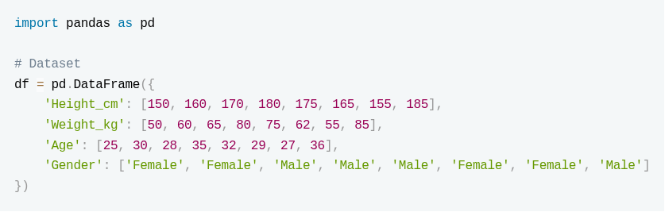
- CategoricalNB
- BernoulliNB
- MultinomialNB
- GaussianNB
Consider the following time series analysis code:
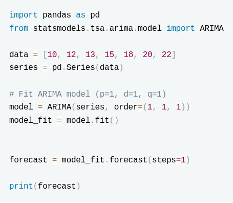
In the above code, what is the primary role of the parameter d=1 in order=(1,1,1)?- It controls the number of lag observations in the model
- It represents the number of times the data is differenced
- It defines the size of the moving average window
- It determines the forecast horizon
In the following question, an Assertion (A) is followed by a Reason (R). Choose the correct option from the choices given below: Assertion (A): In classification problems, precision should always be maximized over recall Reason (R): Recall is independent of false negatives
- Both A and R are true, and R is the correct explanation of A
- Both A and R are true, but R is not the correct explanation of A
- A is true, but R is false
- A is false, but R is true
- Both A and R are false
Consider the following code snippet:
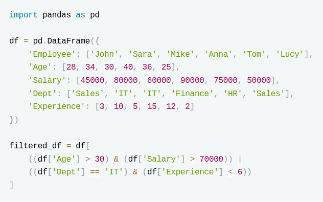
Which employees are included in filtered_df?- Sara, Mike, Anna, Tom
- Sara, Mike, Anna
- Mike, Anna, Tom
- Sara, Anna, Tom
What is the output of the following code? (Enter upto 2 decimals)
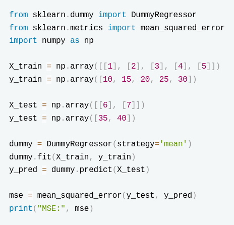
Consider the following adaboost models:
 Which of the following statements are MOST accurate?
Which of the following statements are MOST accurate?
Which of the following statements are MOST accurate?- adb1 is less likely to overfit than adb2 because its base trees are shallower.
- Increasing n_estimators always improves test accuracy for AdaBoost.
- Learning rate affects the contribution of each base learner; a smaller learning rate always reduces training accuracy.
- adb2 with deeper trees will have lower bias but higher variance than adb1.
Consider the following code snippet:
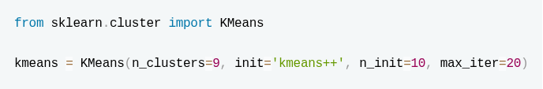
Which of the following statements are true?- If the model reaches convergence in under 20 iterations, it is guaranteed that every data point is mapped to its nearest centroid.
- The value for number of clusters is a hyperparameter that can be validated using a silhouette score or the elbow method.
- The algorithm will execute a total of 20 independent runs using different starting centroid seed
- The initialization process will select 9 data points entirely at random to serve as the starting centroids.
Consider the following Python code snippet used for basic image processing and answer the question that follows:
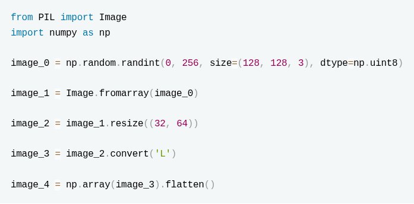
Which of the following statements are False?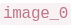
represents an image with 3 color channels- The maximum possible pixel intensity value in is 256
- The resize operation applied to
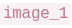
reduces the number of channels 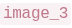
is obtained by flipping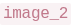
from Left to Right
Identify which of the following lines (marked in comments) contain errors in the given code snippet:
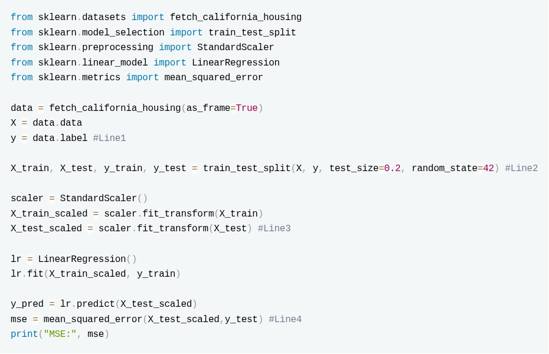
- Line1
- Line2
- Line3
- Line4
Consider the following code snippet:
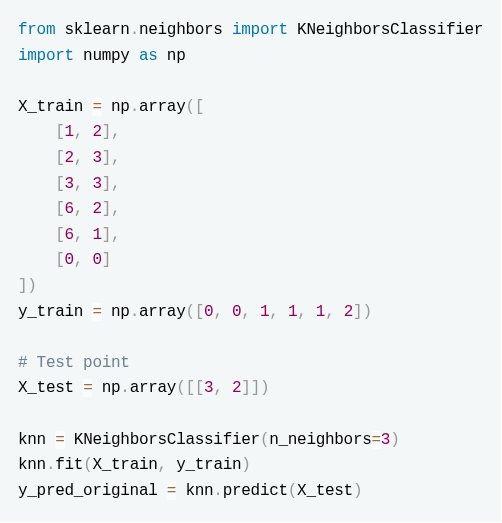
What is the predicted class for the test datapoint?Consider the following code snippet and answer the question that follows:
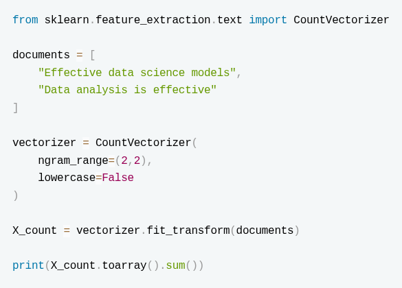
Enter the value obtained as outputConsider the following lists containing the true values and the predicted values.
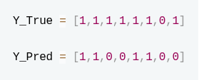
Calculate the f1_score for class 1. (Answer up to 2 decimals)Consider the following code snippet for a multi-class classification problem with three classes: 0, 1, and 2. The ground-truth labels are stored in
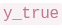
, and the predicted labels are stored in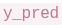
.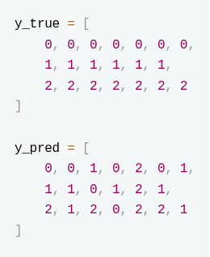
What is the precision score for class 1?Which of the following transformations are commonly used as Data Augmentation techniques?
- Random cropping of images during training
- Normalizing pixel values to the range of [0,1]
- Resizing all images to a fixed resolution
- Rotation of images with a small angle range
Analyze the following code snippet:
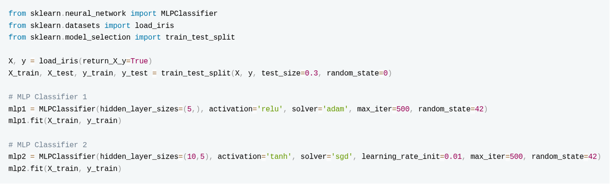
Which of the following statements are correct?- mlp2 has more trainable parameters than mlp1.
- Changing random_state may change predictions even with the same dataset.
- Using 'sgd' solver always gives higher accuracy than 'adam'.
- 'tanh' activation guarantees better performance than 'relu'.
Which of the following statements regarding Tfidf Vectorizer is true?
- Setting
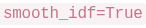
ensures that a term appearing in all documents will have an IDF value equal to zero - Setting
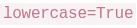
creates an additional copy of each token in lowercase in the vocabulary - Setting
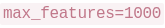
ensures that only the 1000 most frequent terms are kept in the vocabulary - Setting
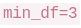
will lead to terms with document frequency strictly lesser than 3 being ignored while building vocabulary
Consider the following code snippet:
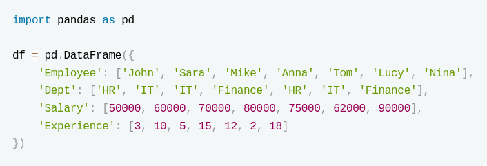
Identify the correct code snippet/s to retrive only employees from departments where the average salary > 65000.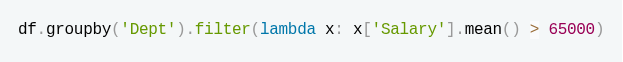
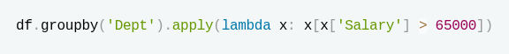
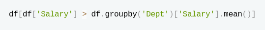
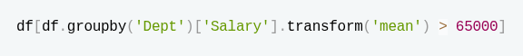
Select all the false statements amongst the given statements:
- RandomForest uses sampling without replacement for bagging.
- Boosting reduces bias by sequentially training models
- Bagging reduces bias by training multiple models on different subsets of data and averaging their predictions.
- Boosting trains all base models independently in parallel.
Which of the following implementations of LogisticRgression cannot be used to tackle multinomial multiclass problems?


What is the range of the metric that is being calculated by the following code snippet?
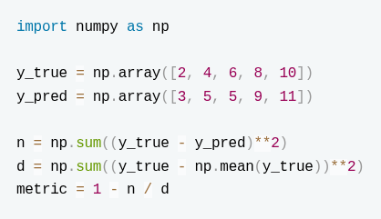
- 0 to 1
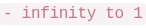
- -1 to 1
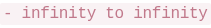
Consider the following cross validation strategy:
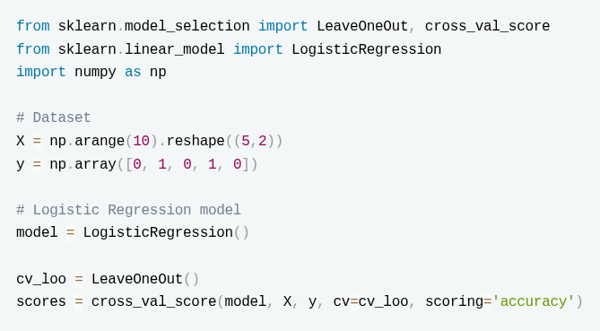
What does the above mentioned cross val strategy do?- LOOCV will train the model 5 times.
- LOOCV will train the model 1 time.
- The code is wrong
Consider the given 2 different lasso regression models trained on the same dataset:
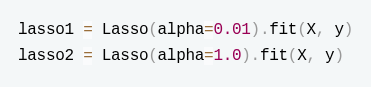
Statements: 1. The coefficients of lasso2 are more likely to be smaller in magnitude than those of lasso1. 2. lasso1 may have fewer zero coefficients than lasso2. 3. The predictions of lasso1 on the training data will exactly match y. 4. Increasing alpha always increases model accuracy on unseen data. Which of the given statements are correct?- 2 and 3
- 1 and 2
- 3 and 4
- 1 and 4
Comprehension passage - the questions below it refer to this
Consider the following dataset X with 6 samples and 3 features and answer the given subquestions.
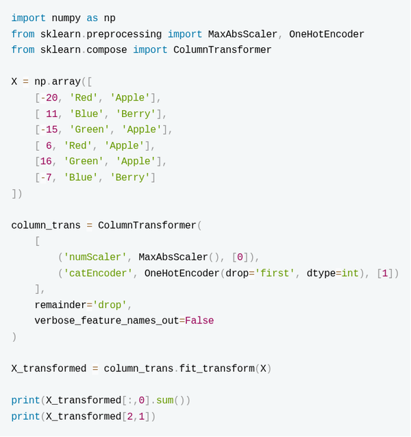
What is the sum of all values of the first column of
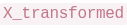
? (Round off to two decimal places)What is the output obtained while running
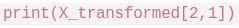
?We create the following ml pipeline:
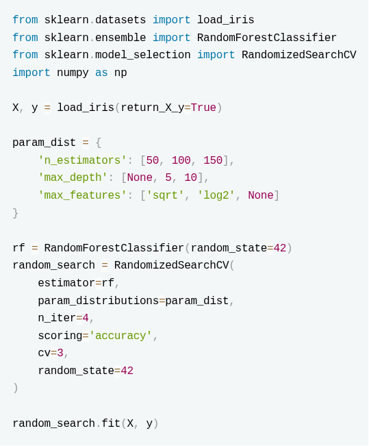
Which of the following statements is true?- RandomizedSearchCV tries all possible combinations of hyperparameters in param_dist.
- Only 4 random combinations of hyperparameters will be tested.
- Changing random_state has no effect on the hyperparameter search results.
- Changing cv to 8 will be computationally cheaper.
Answer key
- Q1 (MCQ, 4 marks): D
- Q2 (MCQ, 4 marks): B
- Q3 (MCQ, 4 marks): E
- Q4 (MCQ, 4 marks): A
- Q5 (SA, 3 marks): 310 to 315
- Q6 (MSQ, 5 marks): A, D
- Q7 (MSQ, 5 marks): A, B
- Q8 (MSQ, 5 marks): B, C, D
- Q9 (MSQ, 5 marks): A, C, D
- Q10 (SA, 4 marks): 0
- Q11 (SA, 4 marks): 6
- Q12 (SA, 4 marks): 0.71 to 0.74
- Q13 (SA, 5 marks): 0.50
- Q14 (MSQ, 3 marks): A, D
- Q15 (MSQ, 3 marks): A, B
- Q16 (MSQ, 4 marks): C, D
- Q17 (MSQ, 4 marks): A, D
- Q18 (MSQ, 4 marks): A, C, D
- Q19 (MCQ, 3 marks): A
- Q20 (MCQ, 3 marks): B
- Q21 (MCQ, 3 marks): A
- Q22 (MCQ, 3 marks): B
- Q23 (SA, 5 marks): -0.46 to -0.44
- Q24 (SA, 4 marks): 1
- Q25 (MCQ, 5 marks): B